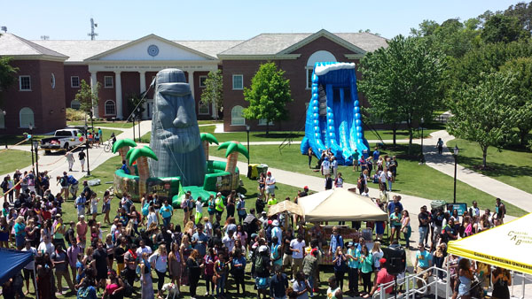

LOUIS UNIVERSITY COLLEGE
"We Assure For Your Better Future"
luc.edu.com.ph
"We Assure For Your Better Future"
luc.edu.com.ph
March 15, 2021
|  |
| Today’s college students are constantly being advertised to, so sometimes it can be difficult to cut through the noise. One way to stand out is by hosting campus events. Events are often fun and inspire excitement in ways traditional marketing can’t. Instead of feeling annoyed by seemingly constant interruption, students will be drawn to your event. This will result in them essentially being advertised to by choice. However, when putting on events it’s important to do so in the most effective way. Follow these tips to ensure your event is a major success: |
| Know Your Audience |
| It’s important to consider your audience. This will allow you to consider their needs and figure out what they will most appreciate from an event. In some cases, you may try to advertise to the entire student body. However, depending on your product or service this may not always be your goal. Getting a grasp of your audience and what they are interested in will ensure you plan your event in a way guaranteed to draw in largest portion of your target audience. |
| Offer Free Food or Swag |
| Nothing turns a college student’s head as fast as the promise of free stuff. Free food in particular can be a big draw if possible to offer. Another great option if food isn’t possible is free company swag. While it may not have the same draw as food, college students will still appreciate the novelty of a free item. Handing out free swag also allows you to potentially give out something with your company’s logo on it. If the student actually uses this item, it will provide further exposure for your brand, with no additional effort on the company’s part. |
| Advertise the Campus Event |
| No one’s going to know about your campus event with out marketing it in advance! It’s important to put effort into getting the word out. To get the best possible exposure for your event, it’s best to take on multiple forms of advertising it. Posters can be a great way to spread word around campus. Meanwhile, utilizing social media will allow you to reach to a larger audience that may not be on campus as often or too rushed to stop and read a poster while there. Make sure all relevant information can be seen in your advertisements. And most of all, make sure you’re really emphasizing what your event can offer to your target audience |
| Measure Success and Weakness |
| After the event is over, go back and review. What went well? What didn’t? How many people were there? Was this expected? What can you do to improve your campus event marketing? Asking yourself these questions will help you reflect from the event and plan for the future. This will help ensure the problems you may face on one occasion don’t have to be problems again. And the successes that you’ve already achieved can carried forward to future events as well. |
Copy Right 2021-2022 @ LOUIS UNIVERSITY COLLEGE